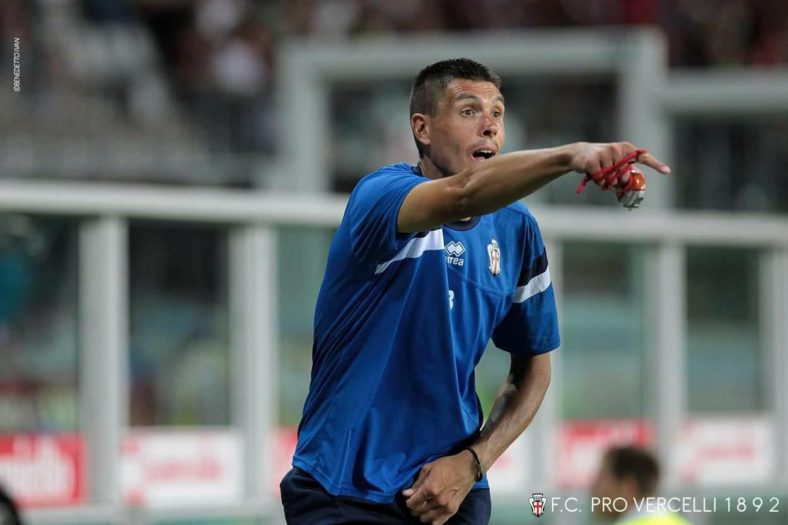
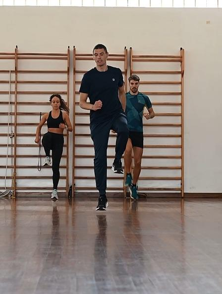
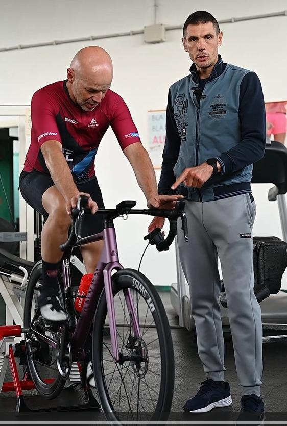
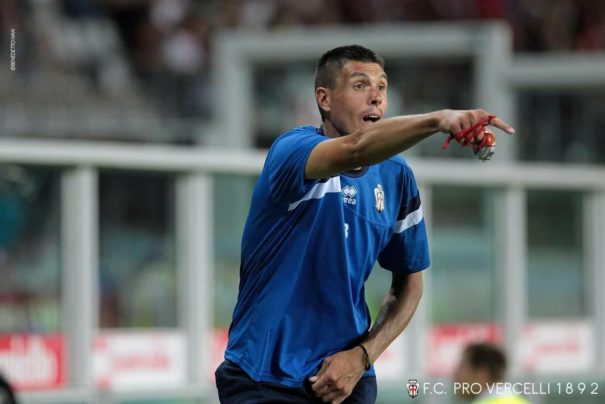
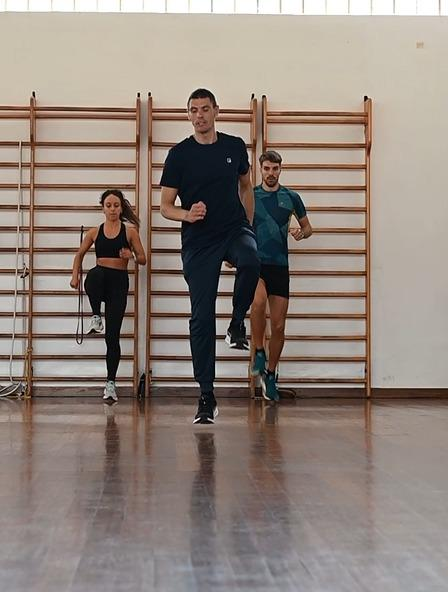
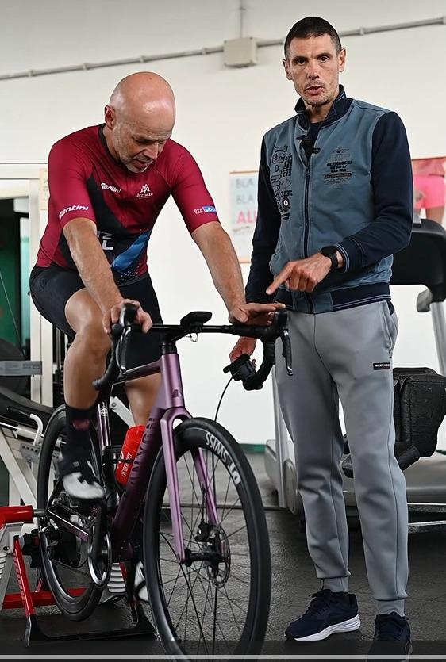

Chi sono?
Ho lavorato per oltre 15 anni nel calcio professionistico, tra serie B e serie C,
in squadre come Pro Vercelli, Alessandria, Aurora Pro Patria e Novara.
La mia passione per la METODOLOGIA DELL’ALLENAMENTO e per gli sport di ENDURANCE
mi ha portato a indirizzare il mio lavoro verso questo mondo.
Da diversi anni mi occupo della preparazione atletica per gli sport di endurance
come corsa su pista, su strada, trailrunning, ciclismo e discipline OCR.
 




